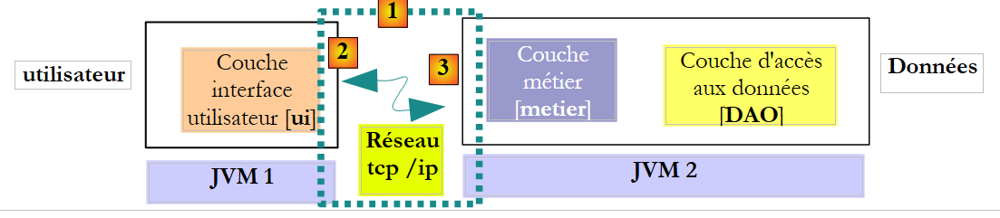
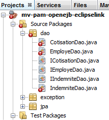
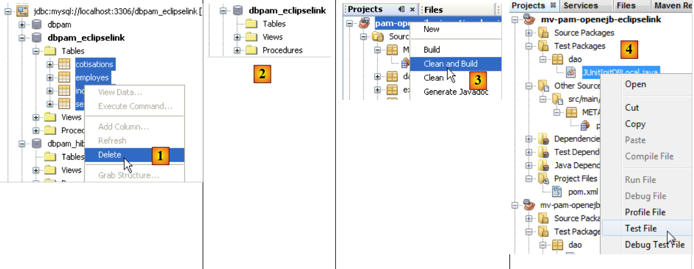
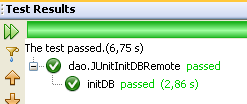
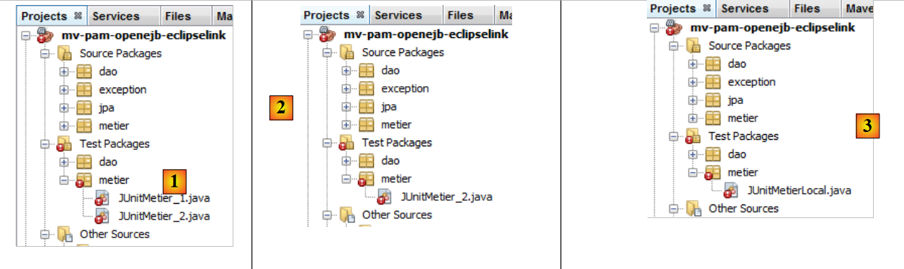
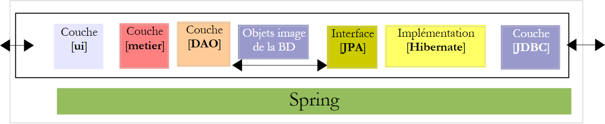
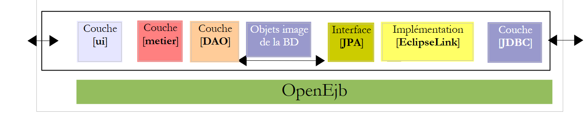

6. الإصدار 2: بنية OpenEJB / JPA
6.1. مقدمة إلى مبادئ النقل
نقدم هنا المبادئ التي ستحكم عملية نقل تطبيق JPA / Spring / Hibernate إلى تطبيق JPA / OpenEJB / EclipseLink. سننتظر حتى القسم 6.2 لإنشاء مشاريع Maven.
6.1.1. الهندستان
التنفيذ الحالي باستخدام Spring / Hibernate
 |
التنفيذ المقرر بناؤه باستخدام OpenEJB / EclipseLink
 |
6.1.2. مكتبات المشروع
- لم تعد طبقات [DAO] و[business] تُنشأ بواسطة Spring. بل يتم إنشاؤها بواسطة حاوية OpenEJB.
- تم استبدال مكتبات حاوية Spring وتكوينها بمكتبات حاوية OpenEJB وتكوينها.
- تم استبدال مكتبات طبقة JPA / Hibernate بمكتبات طبقة JPA / EclipseLink
6.1.3. تكوين طبقة JPA / EclipseLink / OpenEJB
- يصبح ملف [META-INF/persistence.xml] الذي يهيئ طبقة JPA كما يلي:
- السطر 3: المعاملات في حاوية EJB هي من نوع JTA (واجهة برمجة تطبيقات المعاملات في Java). كانت من نوع RESOURCE_LOCAL مع Spring.
- السطر 9: تطبيق JPA المستخدم هو EclipseLink
- الأسطر 5-7: الكيانات التي تديرها طبقة JPA
- الأسطر 11–13: خصائص مزود EclipseLink
- السطر 12: سيتم إنشاء الجداول عند كل عملية تنفيذ
سيتم تحديد خصائص JDBC لمصدر بيانات JTA المستخدم من قبل حاوية OpenEJB بواسطة ملف التكوين التالي [conf/openejb.conf]:
- السطر 3: نستخدم معرف "قاعدة بيانات JDBC الافتراضية" عند العمل مع حاوية OpenEJB مدمجة داخل التطبيق نفسه.
- السطر 5: نستخدم قاعدة بيانات MySQL [dbpam_eclipselink]
6.1.4. تنفيذ طبقة [DAO] باستخدام EJBs
- تصبح الفئات التي تنفذ طبقة [DAO] كائنات EJB. لنأخذ مثال فئة [CotisationDao]:
كانت واجهة [ICotisationDao] في إصدار Spring كما يلي:
سيقوم EJB بتنفيذ هذه الواجهة نفسها في شكلين مختلفين: واجهة محلية وواجهة بعيدة. يمكن استخدام الواجهة المحلية من قبل عميل يعمل في نفس JVM، بينما يمكن استخدام الواجهة البعيدة من قبل عميل يعمل في JVM مختلفة.
الواجهة المحلية:
- السطر 6: ترث واجهة [ICotisationDaoLocal] من واجهة [ICotisationDao] لتتبنى جميع أساليبها. ولا تضيف أي أساليب جديدة.
- السطر 5: تجعل العلامة التوضيحية @Local منها واجهة محلية لـ EJB التي ستقوم بتنفيذها.
الواجهة البعيدة:
- السطر 6: ترث واجهة [ICotisationDaoRemote] من واجهة [ICotisationDao] لتتبنى جميع أساليبها. ولا تضيف أي أساليب جديدة.
- السطر 5: تجعل العلامة التوضيحية @Remote منها واجهة بعيدة لـ EJB التي ستقوم بتنفيذها.
يتم تنفيذ طبقة [DAO] بواسطة EJB الذي ينفذ كلا الواجهتين (وهذا ليس إلزاميًا):
- السطر 1: التعليق التوضيحي @Stateless، الذي يجعل الفئة EJB
- السطر 2: تعليق @TransactionAttribute، الذي يضمن أن كل طريقة في الفئة ستنفذ ضمن معاملة.
- السطر 5: تعليق @PersistenceContext، الذي يقوم بحقن EntityManager الخاص بطبقة JPA في فئة [CotisationDao]. وهو مطابق لما كان لدينا في إصدار Spring.
عند استخدام الواجهة المحلية لطبقة [DAO]، يعمل عميل هذه الواجهة في نفس JVM.
 |
فيما سبق، تتبادل طبقتا [business] و[DAO] الكائنات عن طريق الإشارة. عندما تقوم إحدى الطبقات بتغيير الكائن المشترك، ترى الطبقة الأخرى هذا التغيير.
عند استخدام الواجهة البعيدة لطبقة [DAO]، عادةً ما يعمل عميل هذه الواجهة في JVM أخرى.
 |
في الرسم البياني أعلاه، تتبادل طبقتا [business] و[DAO] الكائنات حسب القيمة (تسلسل الكائن المتبادل). وعندما تقوم إحدى الطبقات بتغيير كائن مشترك، لا ترى الطبقة الأخرى هذا التغيير إلا إذا تم إرجاع الكائن المعدل إليها.
6.1.5. تنفيذ طبقة [الأعمال] باستخدام EJB
- تصبح الفئة التي تنفذ طبقة [business] أيضًا EJB تنفذ واجهة محلية وبعيدة. كانت واجهة [IMetier] الأولية كما يلي:
نقوم بإنشاء واجهة محلية وواجهة بعيدة استنادًا إلى الواجهة السابقة:
تقوم EJB في طبقة [الأعمال] بتنفيذ هاتين الواجهتين:
- السطران 1-2: تعريف EJB حيث يتم تشغيل كل طريقة ضمن معاملة.
- السطر 7: إشارة إلى الواجهة المحلية لـ EJB [CotisationDao].
- السطر 6: تعليمة @EJB توجه حاوية EJB إلى إدخال إشارة إلى الواجهة المحلية لـ EJB [CotisationDao].
- الأسطر 8–11: نقوم بنفس الشيء بالنسبة للواجهات المحلية لـ EJBs [EmployeeDao] و [CompensationDao].
في النهاية، عند إنشاء مثيل لـ EJB [Metier]، سيتم تهيئة الحقول في الأسطر 7 و9 و11 بإشارات إلى الواجهات المحلية لـ EJBs الثلاثة في طبقة [DAO]. لذلك نفترض هنا أن طبقتي [business] و[DAO] ستعملان في نفس JVM.
 |
6.1.6. عملاء EJB
 |
في الرسم البياني أعلاه، للتواصل مع طبقة [الأعمال]، يجب أن تحصل طبقة [واجهة المستخدم] على مرجع إلى الواجهة البعيدة لـ EJB في طبقة [الأعمال].
 |
في الرسم البياني أعلاه، للتواصل مع طبقة [الأعمال]، يجب أن تحصل طبقة [واجهة المستخدم] على مرجع للواجهة المحلية لـ EJB في طبقة [الأعمال]. تختلف طريقة الحصول على هذه المراجع من حاوية إلى أخرى. بالنسبة لحاوية OpenEJB، يمكنك المتابعة على النحو التالي:
الإشارة إلى الواجهة المحلية:
- الأسطر 2–5: يتم تهيئة حاوية OpenEJB.
- السطر 5: لدينا سياق JNDI (واجهة تسمية ودليل Java) الذي يسمح لنا بالحصول على مراجع إلى EJBs. يتم تحديد كل EJB بواسطة اسم JNDI:
- (تابع)
- بالنسبة للواجهة المحلية، أضف "Local" إلى اسم EJB (الأسطر 7-9)
- بالنسبة للواجهة البعيدة، نضيف "Remote" إلى اسم EJB
مع Java EE 5، تختلف هذه القواعد اعتمادًا على حاوية EJB. وهذا يمثل تحديًا. قدمت Java EE 6 ترميز JNDI قابل للنقل عبر جميع خوادم التطبيقات.
يسترد الكود السابق الإشارات إلى الواجهات المحلية لـ EJBs عبر أسماء JNDI الخاصة بها. وقد ذكرنا سابقًا أنه يمكن الحصول عليها أيضًا عبر العلامة @EJB. لذا قد نرغب في كتابة:
لا يتم تفعيل تعليق @EJB إلا إذا كان ينتمي إلى فئة يتم تحميلها بواسطة حاوية EJB. وهذا هو الحال بالنسبة لفئة [Metier]، على سبيل المثال. لكن الكود أعلاه ينتمي إلى فئة وحدة التحكم التي لن يتم تحميلها بواسطة حاوية EJB. ولذلك، نحن مضطرون لاستخدام أسماء JNDI الخاصة بـ EJBs.
فيما يلي الكود للحصول على مرجع للواجهة البعيدة لـ EJB [Metier]:
6.2. تمرين عملي
نقترح ترحيل تطبيق NetBeans Spring/Hibernate إلى بنية OpenEJB/EclipseLink.
التنفيذ الحالي باستخدام Spring / Hibernate
 |
التنفيذ المقرر بناؤه باستخدام OpenEJB / EclipseLink
 |
6.2.1. إعداد قاعدة البيانات [ dbpam_eclipselink]
إذا لم تكن موجودة، فقم بإنشاء قاعدة بيانات MySQL [dbpam_eclipselink]. وإذا كانت موجودة، فاحذف جميع جداولها. قم بإنشاء اتصال NetBeans بهذه القاعدة كما هو موضح في القسم 6.2.1.
6.2.2. التكوين الأولي لمشروع NetBeans
- قم بتحميل مشروع Maven [mv-pam-spring-hibernate]
- أنشئ مشروع Java جديد في Maven [mv-pam-openejb-eclipselink] [1]
 |
- في علامة التبويب [Files] [2]، قم بإنشاء مجلد [conf] [3] تحت جذر المشروع
- ضع ملف [openejb.conf] التالي [4] في هذا المجلد:
 |
- أنشئ المجلد [src/main/resources/META-INF] [5]
- ضع ملف [persistence.xml] التالي [6] فيه:
<?xml version="1.0" encoding="UTF-8"?>
<persistence version="1.0" xmlns="http://java.sun.com/xml/ns/persistence" xmlns:xsi="http://www.w3.org/2001/XMLSchema-instance" xsi:schemaLocation="http://java.sun.com/xml/ns/persistence http://java.sun.com/xml/ns/persistence/persistence_1_0.xsd">
<persistence-unit name="dbpam_eclipselinkPU" transaction-type="JTA">
<!-- the supplier JPA is EclipseLink -->
<provider>org.eclipse.persistence.jpa.PersistenceProvider</provider>
<!-- jpa entities -->
<class>jpa.Cotisation</class>
<class>jpa.Employe</class>
<class>jpa.Indemnite</class>
<!-- properties provider EclipseLink -->
<properties>
<property name="eclipselink.logging.level" value="FINE"/>
<property name="eclipselink.ddl-generation" value="drop-and-create-tables"/>
</properties>
</persistence-unit>
</persistence>
- السطر 12: نطلب سجلات تفصيلية من EclipseLink،
- السطر 13: سيتم إنشاء الجداول عند إنشاء مثيل لطبقة JPA،
- أضف مكتبات OpenEJB و EclipseLink، بالإضافة إلى برنامج تشغيل MySQL JDBC، إلى ملف [pom.xml] الخاص بالمشروع:
<project xmlns="http://maven.apache.org/POM/4.0.0" xmlns:xsi="http://www.w3.org/2001/XMLSchema-instance"
xsi:schemaLocation="http://maven.apache.org/POM/4.0.0 http://maven.apache.org/xsd/maven-4.0.0.xsd">
<modelVersion>4.0.0</modelVersion>
<groupId>istia.st</groupId>
<artifactId>mv-pam-openejb-eclipselink</artifactId>
<version>1.0-SNAPSHOT</version>
<packaging>jar</packaging>
<name>mv-pam-openejb-eclipselink</name>
<url>http://maven.apache.org</url>
<properties>
<project.build.sourceEncoding>UTF-8</project.build.sourceEncoding>
</properties>
<dependencies>
<dependency>
<groupId>org.apache.openejb</groupId>
<artifactId>openejb-core</artifactId>
<version>4.0.0</version>
</dependency>
<dependency>
<groupId>junit</groupId>
<artifactId>junit</artifactId>
<version>4.10</version>
<scope>test</scope>
<type>jar</type>
</dependency>
<dependency>
<groupId>org.eclipse.persistence</groupId>
<artifactId>eclipselink</artifactId>
<version>2.3.0</version>
</dependency>
<dependency>
<groupId>org.eclipse.persistence</groupId>
<artifactId>javax.persistence</artifactId>
<version>2.0.3</version>
</dependency>
<dependency>
<groupId>mysql</groupId>
<artifactId>mysql-connector-java</artifactId>
<version>5.1.6</version>
</dependency>
<dependency>
<groupId>org.swinglabs</groupId>
<artifactId>swing-layout</artifactId>
<version>1.0.3</version>
</dependency>
</dependencies>
<repositories>
<repository>
<url>http://download.eclipse.org/rt/eclipselink/maven.repo/</url>
<id>eclipselink</id>
<layout>default</layout>
<name>Repository for library Library[eclipselink]</name>
</repository>
</repositories>
</project>
- الأسطر 18–22: تبعية OpenEJB،
- الأسطر 30–39: تبعيات EclipseLink،
- الأسطر 41-44: تبعية برنامج تشغيل MySQL JDBC
6.2.3. نقل طبقة [DAO]
سنقوم بنقل طبقة [DAO] عن طريق نسخ الحزم من مشروع [mv-pam-spring-hibernate] إلى مشروع [mv-pam-openejb-eclipselink].
- انسخ حزم [dao، exception، jpa]
 |
ترجع الأخطاء المذكورة أعلاه إلى أن طبقة [DAO] المنسوخة تستخدم Spring وأن مكتبات Spring لم تعد جزءًا من المشروع.
6.2.3.1. EJB [CotisationDao]
نقوم بإنشاء الواجهات المحلية والبعيدة لـ EJB [CotisationDao] المستقبلي:
الواجهة المحلية ICotisationDaoLocal:
لضمان استيراد الحزم بشكل صحيح، انقر بزر الماوس الأيمن على الكود واختر [Fix Imports].
الواجهة البعيدة ICotisationDaoRemote:
ثم نقوم بتعديل فئة [CotisationDao] لتحويلها إلى EJB:
يختفي الاستيراد الذي قامت به هذه الفئة على إطار عمل Spring. قم بإجراء [تنظيف وبناء] على المشروع:
 |
في [1]، لم تعد هناك أية أخطاء في فئة [CotisationDao].
6.2.3.2. EJBs [EmployeDao] و [IndemniteDao]
نكرر نفس العملية بالنسبة للعناصر الأخرى في طبقة [DAO]:
- الواجهات IEmployeDaoLocal و IEmployeDaoRemote المشتقة من IEmployeDao
- EJB `EmployeDao` الذي ينفذ هاتين الواجهتين
- الواجهات IIndemniteDaoLocal و IIndemniteDaoRemote المشتقتان من IIndemniteDao
- EJB IndemniteDao الذي ينفذ هاتين الواجهتين
بمجرد الانتهاء من ذلك، لن تكون هناك أخطاء أخرى في المشروع [2].
6.2.3.3. فئة [PamException]
تظل فئة [PamException] كما كانت من قبل، مع تغيير بسيط واحد:
تمت إضافة السطر 5. للحصول على الاستيرادات الصحيحة، انقر فوق [إصلاح الاستيرادات].
لفهم التعليق التوضيحي في السطر 5، تذكر أن كل طريقة في EJBs في طبقة [DAO] لدينا:
- تعمل ضمن معاملة يبدأها وينهيها حاوية EJB
- تقوم بإلقاء استثناء [PamException] بمجرد حدوث خطأ ما
 |
عندما تستدعي طبقة [الأعمال] طريقة M من طبقة [DAO]، يتم اعتراض هذا الاستدعاء بواسطة حاوية EJB. وكأن هناك فئة وسيطة بين طبقة [الأعمال] وطبقة [DAO] — تسمى هنا [EJB Proxy] — تعترض جميع الاستدعاءات الموجهة إلى طبقة [DAO]. عندما يتم اعتراض الاستدعاء إلى الطريقة M في طبقة [DAO]، يبدأ EJB Proxy معاملة ثم يسلم التحكم إلى الطريقة M في طبقة [DAO]، والتي يتم تنفيذها بعد ذلك ضمن تلك المعاملة. قد تكتمل الطريقة M مع أو بدون استثناء.
- إذا اكتملت الطريقة M بدون استثناء، يعود التحكم إلى وكيل EJB، الذي ينهي المعاملة عن طريق تثبيتها. ثم يعود التحكم إلى الطريقة المستدعية في طبقة [الأعمال]
- إذا انتهت الطريقة M بحدوث استثناء، يعود التنفيذ إلى وكيل EJB، الذي ينهي المعاملة عن طريق التراجع عنها. بالإضافة إلى ذلك، يقوم بتغليف هذا الاستثناء في EJBException. ثم يعود التنفيذ إلى الطريقة المستدعية في طبقة [الأعمال]، والتي تتلقى بالتالي استثناء EJBException. يمنع التعليق التوضيحي في السطر 5 أعلاه هذا التغليف. وبالتالي، ستتلقى طبقة [الأعمال] استثناء PamException. علاوة على ذلك، توجه السمة rollback=true وكيل EJB إلى أنه عند تلقيه استثناء PamException، يجب عليه التراجع عن المعاملة.
6.2.3.4. اختبار طبقة [DAO]
يمكن اختبار طبقة [DAO] التي تم تنفيذها بواسطة EJBs. نبدأ بنسخ حزمة [dao] من [Test Packages] في مشروع [mv-pam-springhibernate] إلى المشروع قيد التطوير حاليًا [1]:
 |
نحتفظ فقط باختبار [JUnitInitDB]، الذي يقوم بتهيئة قاعدة البيانات ببعض البيانات [2]. ونقوم بإعادة تسمية فئة [JUnitInitDbLocal] [3]. وستستخدم فئة [JUnitInitDBLocal] الواجهة المحلية لـ EJBs في طبقة [DAO].
أولاً، نقوم بتعديل فئة [JUnitInitDBLocal] على النحو التالي:
- الأسطر 3-5: إشارات إلى الواجهات المحلية لـ EJBs في طبقة [DAO]
- السطر 7: @BeforeClass يعلق على الطريقة التي يتم تنفيذها عند بدء اختبار JUnit
- الأسطر 10-13: تهيئة حاوية OpenEJB. هذه التهيئة خاصة وتختلف باختلاف كل حاوية EJB.
- السطر 13: لدينا سياق JNDI (واجهة التسمية والدليل في Java) الذي يسمح بالوصول إلى EJBs عبر الأسماء. مع OpenEJB، يتم تعيين الواجهة المحلية لـ EJB بواسطة ELocal والواجهة البعيدة بواسطة ERemote.
- الأسطر 15-17: نطلب مرجعًا إلى الواجهات المحلية لـ EJBs [EmployeDao، CotisationDao، IndemniteDao] من سياق JNDI.
 |
قم بإنشاء المشروع، وابدأ تشغيل خادم MySQL إذا لزم الأمر، وقم بتشغيل اختبار JUnitInitDBLocal. لاحظ أن ملف [persistence.xml] قد تم تكوينه لإعادة إنشاء الجداول في كل مرة يتم فيها تشغيل الاختبار. قبل تشغيل الاختبار، من الأفضل حذف أي جداول موجودة في قاعدة بيانات MySQL [dbpam_eclipselink].
 |
- في [1]، في علامة التبويب [Services]، احذف الجداول من اتصال NetBeans الذي تم إنشاؤه في القسم 6.2.1.
- في [2]، لم تعد قاعدة البيانات [dbpam_eclipselink] تحتوي على أي جداول
- في [3]، تم إنشاء المشروع
- في [4]، يتم تنفيذ اختبار JUnitInitDBLocal
 |
- في [5]، نجح الاختبار
- في [6]، قم بتحديث اتصال NetBeans
- في [7]، نرى الجداول الأربعة التي أنشأتها طبقة JPA. كان الغرض من الاختبار هو ملؤها. نعرض محتويات أحدها
 |
- في [8]، محتويات جدول [EMPLOYEES]
عرضت حاوية OpenEJB السجلات في وحدة التحكم:
- السطران 2-3: اسمي JNDI لـ EJB [CotisationDaoLocal]،
- السطران 4-5: اسمي JNDI لـ EJB [CotisationDaoRemote]،
- السطران 7-8: اسمي JNDI لـ EJB [EmployeDaoLocal]،
- السطران 9-10: اسمي JNDI لـ EJB [EmployeDaoRemote]،
- السطران 12-13: اسمي JNDI لـ EJB [IndemniteDaoLocal]،
- السطران 14–15: اسمي JNDI لـ EJB [EmployeeDaoRemote].
نجري الاختبار نفسه مرة أخرى، هذه المرة باستخدام الواجهة البعيدة لـ EJBs.
 |
في [1]، تم نسخ فئة [JUnitInitDBLocal] (عن طريق النسخ واللصق) إلى [JUnitInitDBRemote]. وفي هذه الفئة، نقوم باستبدال الواجهات المحلية بالواجهات البعيدة:
بمجرد الانتهاء من ذلك، يمكن تشغيل فئة الاختبار الجديدة. قبل القيام بذلك، باستخدام اتصال NetBeans [dbpam_eclipselink]، احذف الجداول من قاعدة البيانات [dbpam_eclipselink].
 |
باستخدام اتصال NetBeans [dbpam_eclipselink]، تحقق من أن قاعدة البيانات قد تم ملؤها.
6.2.4. نقل طبقة [الأعمال]
سنقوم بنقل طبقة [business] عن طريق نسخ الحزم من مشروع [mv-pam-spring-hibernate] إلى مشروع [mv-pam-openejb-eclipselink].
 |
ترجع الأخطاء المذكورة أعلاه [1] إلى أن طبقة [business] المنسوخة تستخدم Spring وأن مكتبات Spring لم تعد جزءًا من المشروع.
6.2.4.1. EJB [الأعمال]
نتبع نفس الإجراء الموصوف لـ EJB [CotisationDao]. أولاً، في [2]، نقوم بإنشاء الواجهات المحلية والبعيدة لـ EJB [Metier] المستقبلي. وكلاهما مشتق من الواجهة الأولية [IMetier].
بمجرد الانتهاء من ذلك، نقوم في [3] بتعديل فئة [Business] بحيث تصبح EJB:
- السطر 1: تعليق @Stateless يجعل الفئة EJB
- السطر 2: سيتم تنفيذ كل طريقة من طرق الفئة ضمن معاملة
- السطر 3: تنفذ EJB [Metier] كلاً من الواجهتين المحلية والبعيدة اللتين حددناهما للتو
- السطر 7: سيستخدم EJB [Metier] EJB [CotisationDao] عبر واجهته المحلية. وهذا يعني أن طبقتي [business] و[DAO] يجب أن تعملان في نفس JVM.
- السطر 6: يضمن التعليق التوضيحي @EJB أن يقوم حاوية EJB بحقن المرجع إلى الواجهة المحلية لـ EJB [CotisationDao] نفسه. النهج الآخر الذي صادفناه هو استخدام سياق JNDI.
- الأسطر 8-11: تُستخدم الآلية نفسها مع EJBs الآخرين في طبقة [DAO].
6.2.4.2. اختبار طبقة [business]
يمكن اختبار طبقة [business] الخاصة بنا، والتي تم تنفيذها بواسطة EJB. نبدأ بنسخ حزمة [business] من [Test Packages] في مشروع [mv-pam-spring-hibernate] إلى المشروع قيد الإنشاء حاليًا [1]:
 |
- في [1]، نتيجة النسخ
- في [2]، نحذف الاختبار الأول
- في [3]، يتم تغيير اسم الاختبار المتبقي إلى [JUnitMetierLocal]
تصبح فئة [JUnitMetierLocal] كما يلي:
- السطر 4: إشارة إلى الواجهة المحلية لـ EJB [Metier]
- الأسطر 8-12: تكوين حاوية OpenEJB مطابق لتلك المستخدمة في اختبار طبقة [DAO]
- الأسطر 15-19: نطلب إشارات من سياق JNDI في السطر 12 إلى EJBs الثلاثة في طبقة [DAO] وإلى EJB في طبقة [business]. سيتم استخدام EJBs في طبقة [DAO] لتهيئة قاعدة البيانات، وسيتم استخدام EJB في طبقة [business] لإجراء اختبارات حساب الرواتب.
يؤدي تشغيل اختبار [JUnitMetierLocal] إلى النتيجة التالية [1]:
 |
في [2]، نقوم بنسخ [JUnitMetierLocal] كـ [JUnitMetierRemote] لاختبار الواجهة البعيدة لـ EJB [Metier] هذه المرة. تم تعديل كود [JUnitMetierRemote] لاستخدام هذه الواجهة البعيدة. أما الباقي فلم يتغير.
- السطران 4 و 19: نستخدم الواجهة البعيدة لـ EJB [Business].
- السطور 15–17: نستخدم الواجهات البعيدة لطبقة [DAO]
- السطران 34 و35: نظرًا لأن الكائنات المتبادلة بين العميل والخادم تُمرر بالقيمة في الواجهات البعيدة، يجب علينا استرداد النتيجة التي تُرجعها الطريقة create(Indemnite i). لم يكن هذا ضروريًا في الواجهات المحلية، حيث تُمرر الكائنات بالمرجع.
بمجرد الانتهاء من ذلك، يمكن بناء المشروع وتنفيذ اختبار [JUnitMetierRemote]:
 |
6.2.5. نقل طبقة [وحدة التحكم]
سنقوم بنقل طبقة [console] عن طريق نسخ الحزم من مشروع [mv-pam-spring-hibernate] إلى مشروع [mv-pam-openejb-eclipselink].
 |
تنبع الأخطاء المذكورة أعلاه [1] من حقيقة أن طبقة [business] المنسوخة تستخدم Spring، وأن مكتبات Spring لم تعد جزءًا من المشروع. في [2]، تم تغيير اسم الفئة [Main] إلى [MainLocal]. وستستخدم الواجهة المحلية لـ EJB [Business].
يتغير كود فئة [MainLocal] على النحو التالي:
توجد التغييرات في الأسطر 13–25. هكذا نحصل على مرجع إلى طبقة [business]، التي قد تغيرت (الأسطر 17–22). لن نشرح الكود الجديد، حيث تم تناوله بالفعل في الأمثلة السابقة. بمجرد إجراء هذه التغييرات، لن يكون هناك أي أخطاء في المشروع (انظر [3]).
نقوم بتكوين المشروع للتشغيل باستخدام المعلمات [1]:
 |
لكي يعمل تطبيق وحدة التحكم بشكل طبيعي، يجب أن تكون هناك بيانات في قاعدة البيانات. للقيام بذلك، يجب تعديل ملف [META-INF/persistence.xml]:
تم تعليق السطر 14، الذي تسبب في إعادة إنشاء جداول قاعدة البيانات عند كل تشغيل. يجب إعادة بناء المشروع (تنظيف وبناء) حتى يسري مفعول هذا التغيير. بمجرد الانتهاء من ذلك، يمكن تشغيل البرنامج. إذا سارت الأمور على ما يرام، سيبدو إخراج وحدة التحكم كما يلي:
<?xml version="1.0" encoding="UTF-8"?>
<persistence version="1.0" xmlns="http://java.sun.com/xml/ns/persistence" xmlns:xsi="http://www.w3.org/2001/XMLSchema-instance" xsi:schemaLocation="http://java.sun.com/xml/ns/persistence http://java.sun.com/xml/ns/persistence/persistence_1_0.xsd">
<persistence-unit name="dbpam_eclipselinkPU" transaction-type="JTA">
<!-- the supplier JPA is EclipseLink -->
<provider>org.eclipse.persistence.jpa.PersistenceProvider</provider>
<!-- jpa entities -->
<class>jpa.Cotisation</class>
<class>jpa.Employe</class>
<class>jpa.Indemnite</class>
<!-- properties provider EclipseLink -->
<properties>
<property name="eclipselink.logging.level" value="FINE"/>
<!--
<property name="eclipselink.ddl-generation" value="drop-and-create-tables"/>
-->
</properties>
</persistence-unit>
</persistence>
هنا، استخدمنا الواجهة المحلية لطبقة [business]. نستخدم الآن واجهتها البعيدة في فئة وحدة تحكم ثانية:
|
في [1]، تم نسخ فئة [MainLocal] إلى [MainRemote]. تم تعديل الكود في [MainRemote] لاستخدام الواجهة البعيدة لطبقة [business]:
تم إجراء تغييرات على السطرين 2 و 8. تم تكوين المشروع [2] لتشغيل فئة [MainRemote]. يؤدي تشغيله إلى نفس النتائج السابقة.
6.3. الخلاصة
لقد أوضحنا كيفية ترحيل بنية Spring/Hibernate إلى بنية OpenEJB/EclipseLink.
بنية Spring/Hibernate
 |
بنية OpenEJB/EclipseLink
 |
سارت عملية النقل بسلاسة لأن التطبيق الأصلي كان مبنيًا على طبقات. ومن المهم فهم هذه النقطة.